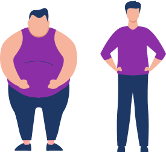

Сейчас мы будем говорить о реальности реальностей.
Одна из ключевых установок человека —
страх, что мы потеряем ощущение реальности.
Для нас настолько важна реальность именно того представления о реальности, которое мы изучаем в школе и которое приходит к нам из рационального опыта, что какие-то моменты, которые не вписываются в это представление, сразу и сильно выбивают нас.

Поскольку мы сейчас говорим с вами про норму, важно сказать, что они выбивают нас из нормы,
у нас «слетает норма».
Что значит «слетает норма»?
Если в какой-то момент, когда какой-то классный результат пришел в нашу реальность, мы не успели снять с него лоск и решить, что это нормально получать такие результаты — то если мы не выровняли свою норму — наше подсознание начинает опасаться за установку
«реальность реальна» и сразу резко убирает наш результат.
Прилетает ложка дегтя в бочку меда, чтобы быстро все уравновесить и показать:
все реально, никакого волшебства нет, смотри, как все ужасно.
Ты же привык к такой ужасной реальности, ты же привык, что твоя реальность именно такая — вот, пожалуйста, тебе ложка дегтя, чтобы все уравновесить.
Это подстраивает вашу жизнь под те стандарты нормы, которые есть в вашем подсознании.
Но мы же не хотим на сознательном уровне такую реальность, мы хотим, чтобы действительно все было классно
чтобы это было не волшебно для нас, а чтобы мы это реально ощущали.
И для того чтобы нам это предотвратить, идеальным образом подходит проработка образа реальности.
Стоит проработать, не слетает ли у вас ощущение «реальной реальности», нет ли у вас ощущения, что все слишком классно.
Когда мы просто живем, нам все кажется обычным.
Мы думаем:
-
«Вот было бы все сказочно»
-
«Вот стало бы все замечательно»
-
«Вот было бы все как в лучших голливудских фильмах».
Но на самом деле, попадая в такие обстоятельства, мы моментально сами себя из них вытаскиваем,
потому что хотим ощутить, что все реально, все по-настоящему.
Если мы поменяем представление реальности, если реальность для нас не будет больше связана с болью, руганью, с какими-то болезнями —
норма не будет слетать.
вы можете прямо сейчас посмотреть в тренажере образ «Нормальное тело». Посмотрите, что это за тело в вашем образе. Это тело с болезнями и диагнозами
Вы можете посмотреть любые темы, которые вас волнуют.
Что для вас нормально, а что реально.
Нормальный бизнес, какой он?
Это бизнес, который приносит миллиарды в месяц, или 100 тысяч рублей в месяц, или который ничего не приносит? Что для вас нормальный бизнес?
Вы можете всю свою реальность поделить на сферы-кусочки и посмотреть через образ,
что для вас норма в этом направлении:
Что для вас норма в плане денег, в плане отношений.
Какие это — нормальные отношения?
Образ нормы будет уравновешиваться с тем вашим сознательным образом,
который вы прорабатываете, к которому вы стремитесь.
Если для вас образ нормальных отношений —
это образ, где люди хотя бы раз в неделю поругались или где происходят различные проблемы, то неудивительно, если при проработке ваших отношений, когда все вдруг станет волшебным, вы обязательно уравновесите это чем-то.
На 3-й ступени
мы говорили о том, что у каждого человека есть какие-то
проблемные сферы. Давайте остановимся на этом подробнее,
потому что чаще всего эти проблемные сферы возникают не
просто так.
Есть сферы, где нам проще сдать наш результат, принести его в жертву, для того чтобы
реальность была реальной.
Представьте, что у вас бизнес, который приносит вам огромное удовольствие, огромные деньги.
При этом у вас стройное здоровое тело, вы прекрасно себя чувствуете и вообще не знаете, что такое болезни.
У вас прекрасные отношения с родителями, полное взаимопонимание с вашими детьми и любимым человеком.
Вы никогда не ругаетесь и вообще не представляете, как можно поругаться со своими близкими.
Если эта картинка для вас нереальна, то есть если вы представите свою идеальную жизнь и она ощущается для вас как нереальная, тогда вы принесете в жертву одну из частей этой картины, чтобы все остальное оставалось.

Часто бывает так: мы проработали одну сферу, и чтобы
«реальность реальности» не слетела, у нас резко падает что-то в другой сфере.
Это происходит, чтобы все уравновесить,
чтобы прийти к тому образу нормальной жизни,
который есть в вашем подсознании.
Обращаю внимание,
что проработки на этом уровне не такие эмоциональные. Здесь все в основном происходит на сознательном уровне, и нервное напряжение бывает очень слабым.
После нескольких проработок уровня нормы у вас возникнет вопрос
«А как проработать глубже?»
На третьем уровне мы с вами говорили про глубину. И вы помните, что у каждой установки есть глубина, есть более глубокая причина, зачем эта норма нужна.
То же самое можно сказать про норму и самооценку. Когда мы проработали их на достаточном уровне, у нас возникает внутренняя потребность идти дальше,
выйти из этого круга нормы-самооценки.
Почему круг?
Потому что я уже говорил, что норма и самооценка —
это две стороны одной медали.
Это все про то,
что я вписываюсь в общество, про то, что я
нормальный,
я не выскочка,
я не супергерой.
Я могу жить в социуме, и он меня не выгонит.
Но когда мы только начинали это прорабатывать, мы не могли идти глубже, потому что нужно было сначала хорошо отработать эту часть. Нужно было хорошо понимать,
как приводить в норму ту жизнь, которую мы проживаем.
Сейчас мы будем переходить на 5-ю ступень Master Kit.
Это супердуховный уровень. Это уровень, который позволит вам выйти из бесконечного круга норма-самооценка: то я классный, то не классный, то хорошо могу себя ощущать, то плохо. Хочется выйти из тех важных оценок, которые мы прожили.
Хочется шагнуть глубже, и это правильно.
Весь
Master Kit построен таким образом, что весь путь, который вы проходите, вы прорабатываете свои установки.
Не бывает так, что кто-то прорабатывает свои установки и у него ничего не меняется. Каждый раз что-то прорабатывая, мы уходим все глубже и глубже к пониманию себя.
На 4-й ступени мы больше дружили с миром.
Мы немного забивали на такие универсальные установки, как
-
«мои желания»
-
«моя индивидуальность»
Мы немного стирали свою индивидуальность, мы подстраивались под общество.
И это было правильно. Потому что именно из такого прожитого состояния мы можем перейти к безоценочному состоянию.
Вы никогда не будете ощущать свои желания так ярко,
как на 5-й ступени.
Потому что ваши желания на 5-й ступени перестанут конфликтовать с социумом.
Вы как никогда почувствуете, что существует только ваша реальность и ваши желания, а все остальные люди —
это вообще вы.
Мы — как единый информационный организм, просто поделены на отдельные индивидуальности, но на самом деле мы едины.
Вы будете это понимать не просто на уровне слов. Вы будете понимать это изнутри. Вы сами это ощутите, как и все, что с вами случается в Master Kit.
Потому что это методика дает вам подсказки и ключи, а вы все открываете сами внутри себя.